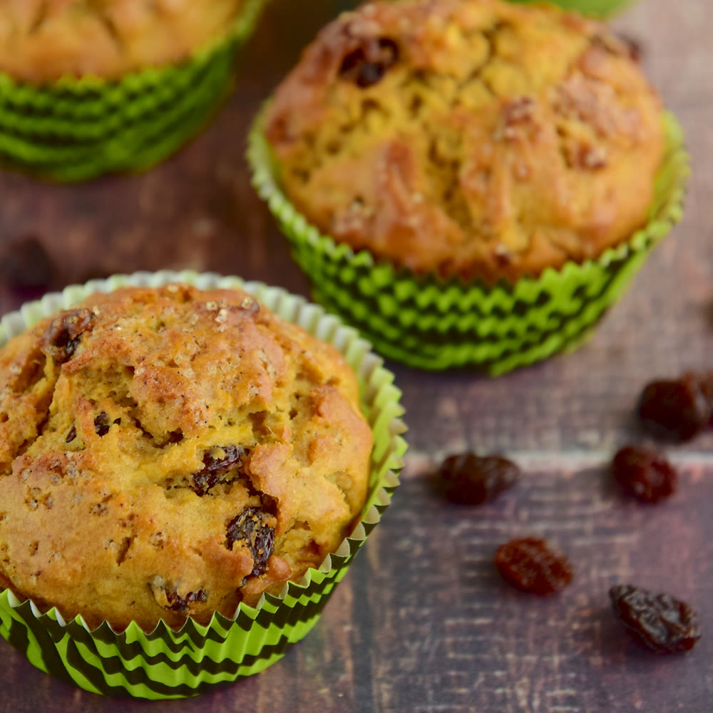

Doces · Outros doces
Muffins

Ingredientes
- Manteiga para untar
- 1 xícara de farinha de trigo
- 1 xícara de farinha integral
- 1 colher (sopa) de açúcar
- 1/2 colher (chá) de sal
- 3 colheres (chá) de fermento em pó
- 1 ovo
- 1/4 xícara de óleo
- 1 xícara de leite
- 1/2 xícara de passas brancas em água morna, escorridas
Modo de preparo
- Pré-aqueça o forno a 180 °C. Unte 12 forminhas de muffins.
- Peneire farinhas, açúcar, sal e fermento na tigela.
- Misture ovo, óleo e leite; despeje nos secos com as passas. Misture rapidamente (massa empelotada).
- Distribua nas forminhas (2/3 da capacidade). Asse ~25 min até dourar.
- Desenforme, esfrie e congele.
Observação
Use forminhas de empada de 7 cm se não tiver de muffins. Congelamento: recipiente rígido com toalhas de papel.